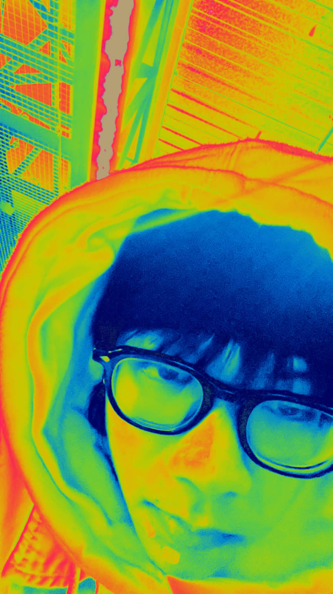

Web / UI
Bakery Website Design
Created a clean, welcoming website interface that enhances product presentation and customer experience.
DAO TRONG TAN · ETHAN DAO
A Communication Design student at RMIT University, working across graphic design, photography, 3D and experience design — based in Melbourne, Australia.

↓ SCROLL DOWN ↓
QUIET STORIES.
I am drawn to images, colours and the quiet stories behind everyday visuals. For me, design is not just about making things look good, but about creating feelings and moments of connection.
I want my work to make people stop, look closer and remember the idea behind it.
RESEARCH
Research is an important part of my process: it helps me develop concepts that go beyond obvious solutions. I enjoy combining photography, 3D and experience design to create stronger, more memorable outcomes.
I am not interested in one fixed style, but in building a recognisable point of view. My long-term ambition is to become an Art Director, leading projects where concept, visual direction and experimentation matter equally.
Bachelor of Communication Design, 2023 – 2027.
2D and 3D Graphic Design, 2022 – 2023.
Web / UI
Created a clean, welcoming website interface that enhances product presentation and customer experience.
Brand identity
Redesigned the visual identity with a modernised logo, refined colour system, and cohesive brand style.
Campaign graphics
Developed vibrant promotional assets using bold typography and playful compositions aligned with the brand’s energy.
Photography
Produced a curated series of urban-focused photographs, exploring light, rhythm, and narrative through visual storytelling.
Illustration
Designed a themed playing-card deck with unique illustrations and consistent visual style.